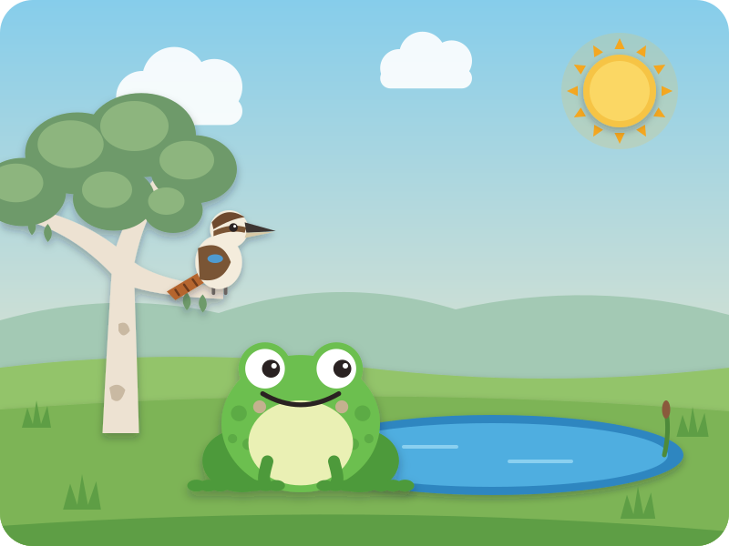
A Dreaming story from Aboriginal Australia
Tiddalik the Thirsty Frog
"Story, story — are your ears open?" Kai: "Open!"
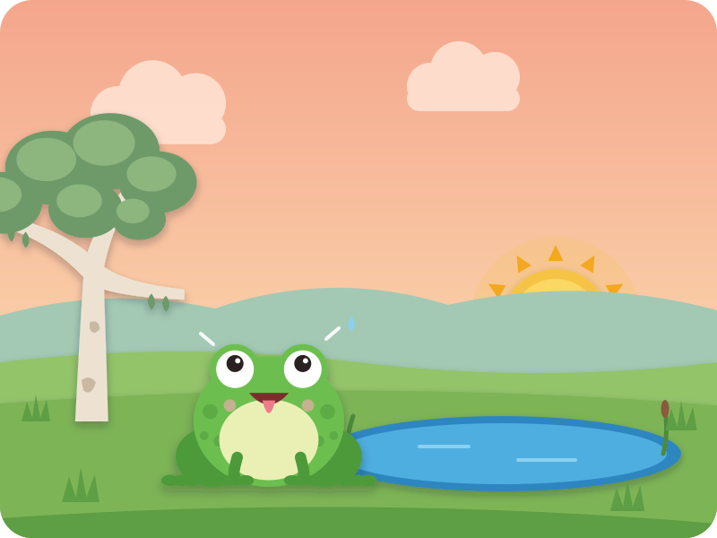
Long, long ago, there lived a frog called Tiddalik.
One hot morning, Tiddalik woke up by the billabong. He was thirsty. So very, very thirsty!
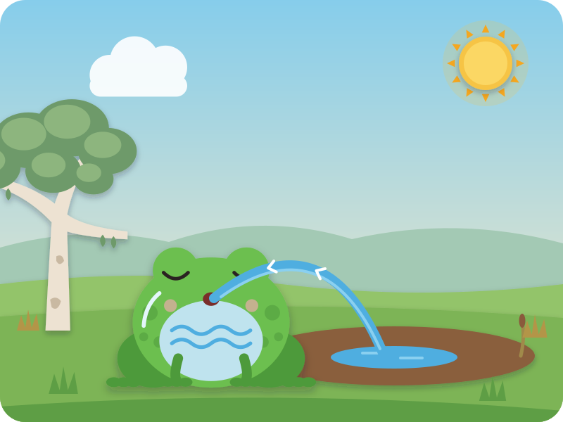
He drank from the billabong.
Gulp, gulp, GULP! Kai gulps
Tiddalik got bigger… and the billabong got smaller.
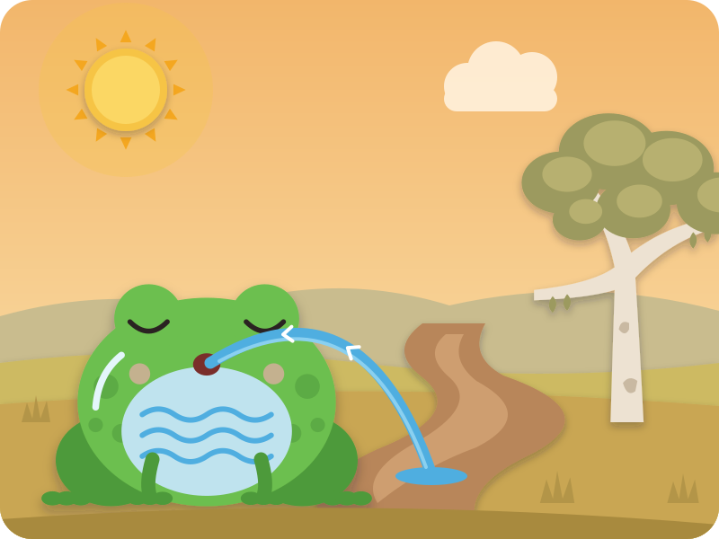
But he was still thirsty! So he drank the river too.
Gulp, gulp, GULP! Kai gulps
Now Tiddalik was as round as a ball.
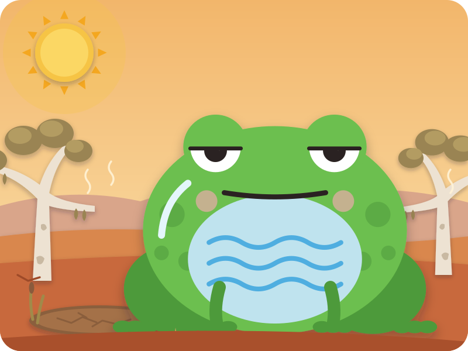
He drank every creek and every waterhole, until he was as big as a hill.
The grass went dry and crunchy. The trees drooped. And there wasn't one drop of water left for anyone else.
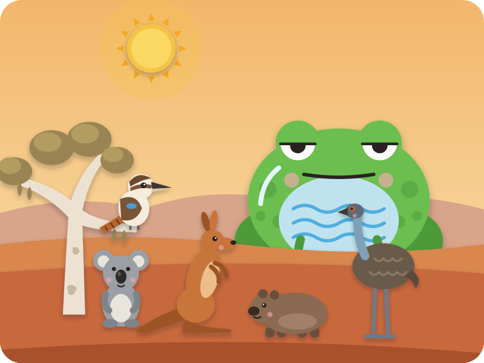
The animals were so thirsty. Kookaburra, Kangaroo, Wombat, Emu and Koala met under the old gum tree.
"How can we get the water back?" Then they had an idea. "If Tiddalik laughs, the water will come out!"
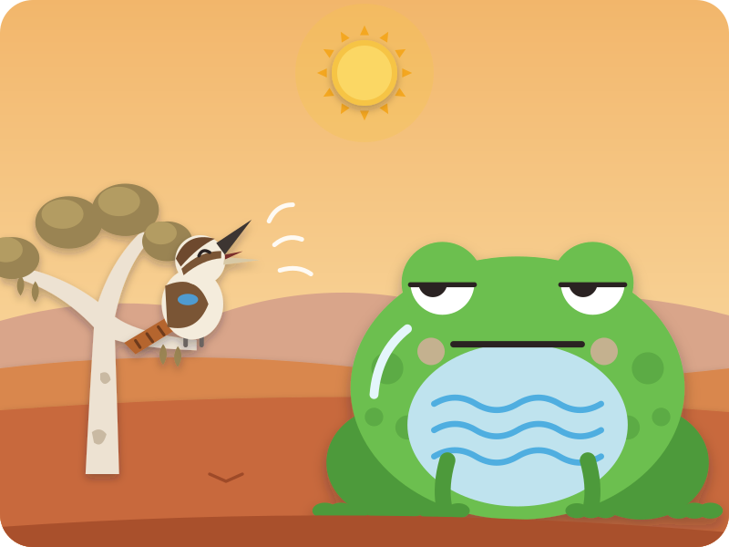
Kookaburra laughed her very best laugh:
Koo-koo-kaa-kaa! Kai laughs like a kookaburra
Tiddalik just blinked. Not one smile.
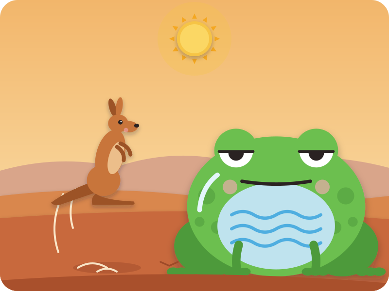
Kangaroo hopped — boing! boing! BOING! — higher and higher.
Tiddalik just sat there. Not one smile.
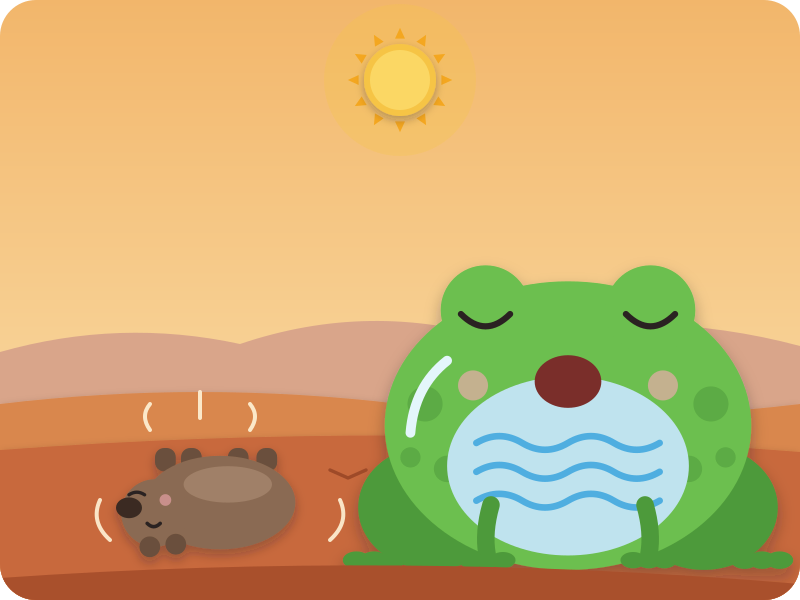
Wombat rolled over on his round back and waved his legs in the air.
Tiddalik yawned a big yawn. Not one smile.
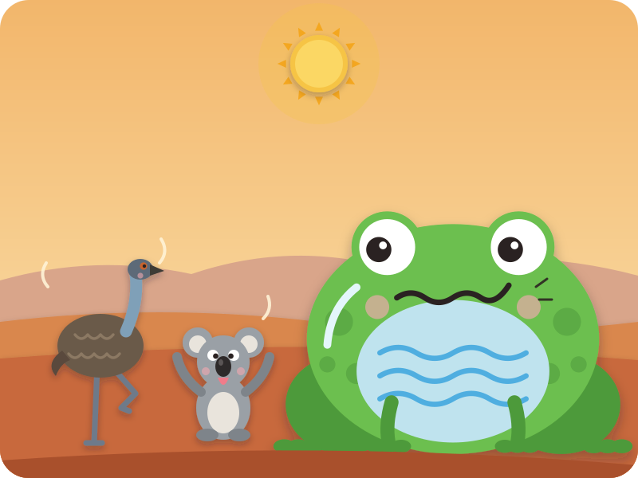
Emu did a wobbly dance. Koala pulled a silly face.
Now you, Kai — your silliest face! Kai pulls a face and wiggles
Tiddalik's mouth went… twitch.
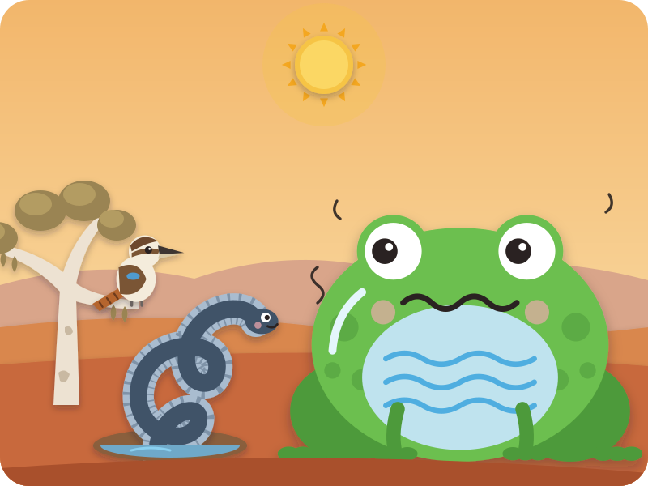
Then Eel came wriggling out of the very last muddy puddle.
She twisted and twirled and tied herself in a big, silly knot! Kai wiggles like Eel
Tiddalik's tummy began to wobble…
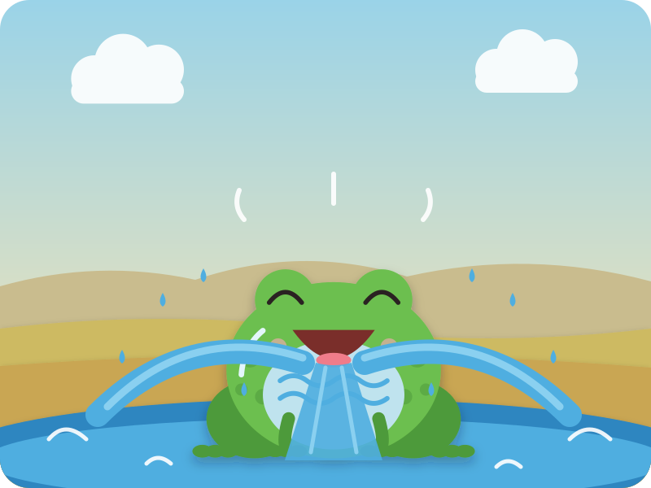
"Ha-ha-HA-HA!" Tiddalik laughed and laughed — and out came all the water!
SPLOOSH! Kai shouts "SPLOOSH!"
It gushed back into the billabongs, the rivers and the creeks.
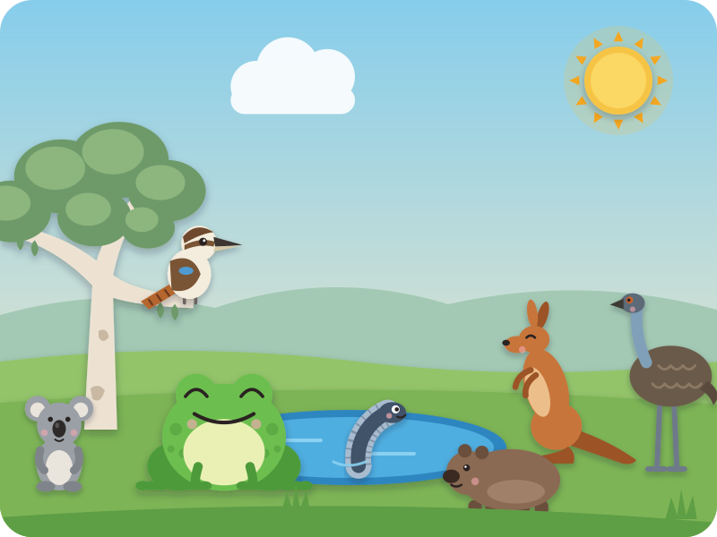
Soon the grass was green again, and everyone had a long, cool drink.
Tiddalik was a little frog again. "Sorry, everyone," he said. "Water is for sharing."
And now he only drinks his share — sip, sip, sip.
The End
"Snip, snap, snout — this tale's told out."
Swipe back to read it again
Driving? Tell it without the page · six beats
The picture book is for home, bedtime, or a passenger. In the car, tell it from memory — bold is Kai's part.
- Tiddalik the frog wakes up very thirsty and drinks the billabong — gulp, gulp, GULP!
- He drinks the rivers and creeks too, until he's as big as a hill and the land is dry.
- The thirsty animals have an idea: if Tiddalik laughs, the water will come out!
- Kookaburra laughs — koo-koo-kaa-kaa! — Kangaroo hops, Wombat rolls, Emu dances, Koala pulls a face — your silliest face! Not one smile.
- Eel ties herself in a silly knot — and Tiddalik laughs. Out comes the water — SPLOOSH!
- The land turns green, everyone drinks, and Tiddalik says sorry: "Water is for sharing."
After the story · car-friendly wondering
"Which animal was the funniest? Can you do Eel's wiggle?"
"How did the other animals feel when all the water was gone?"
"What's something YOU like to share?"
Where this story comes from
Tiddalik is a Dreaming story from Aboriginal Australia. Dreaming stories are not just folk tales: they belong to particular Aboriginal peoples and their Country, and they can carry knowledge and meaning that run much deeper than a bedtime story. Published versions most often credit Tiddalik to the Gunaikurnai people of Gippsland, in Victoria, but tellings differ in their details — including which animals try to make the frog laugh. It is one of the Dreaming stories most widely shared in Australian children's books. This retelling is our own and much simplified, for a 4-year-old: in many older recorded tellings the water bursts out of Tiddalik as a great flood, rather than ending in a happy drink — here no one is hurt, and Tiddalik learns to share. The pictures are in our site's own paper-cut style, not Aboriginal art. If you can, look for a version told or published by Aboriginal storytellers.